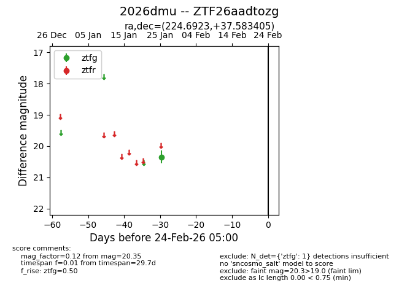
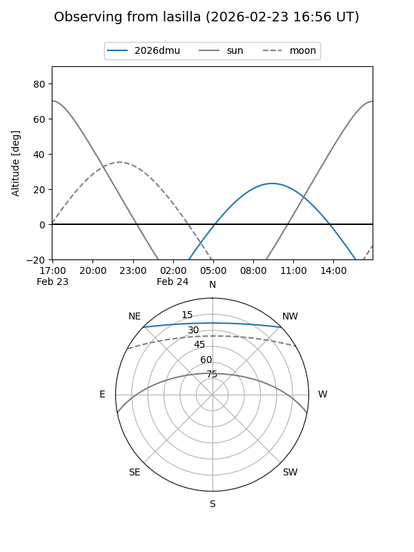
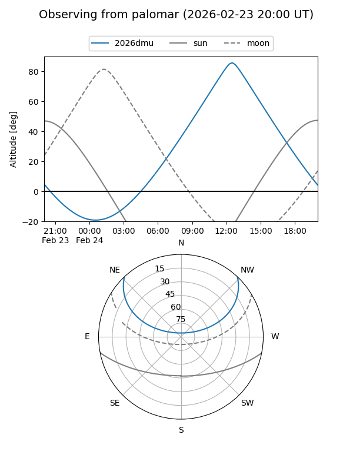

2026dmu
Target 2026dmu at 2026-02-24 09:08
Aliases and brokers:
FINK: link
Lasair: link
ALeRCE: link
TNS: link
YSE: link
alt names
ZTF26aadtozg (ztf,fink_ztf)
2026dmu (tns,yse)
Coordinates:
equatorial (ra, dec) = 224.6923,+37.58340
equatorial (HMS+DMS) = 14:58:46.16,+37:35:00.26
galactic (l, b) = (62.3628,+61.32022)
Flags:
Photometry:
last ztfg=20.35
1 ztfg detections
Lightcurve

Visibility


Additional plots